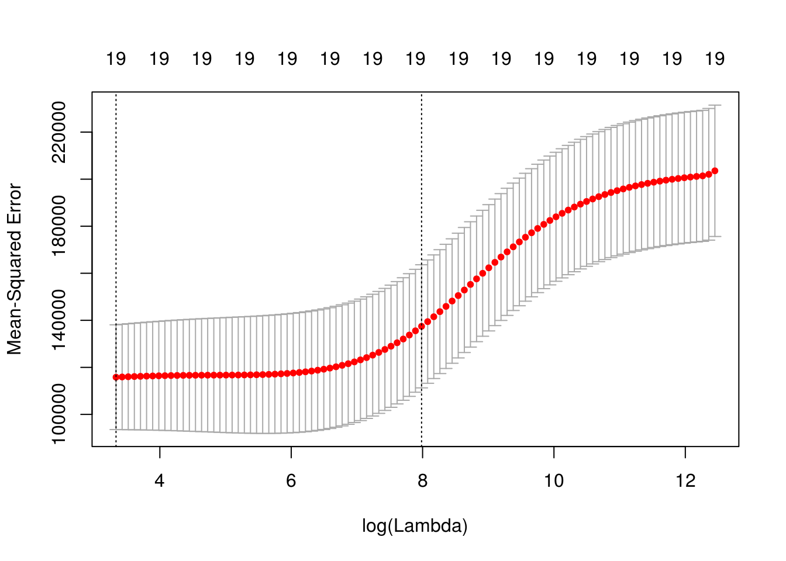
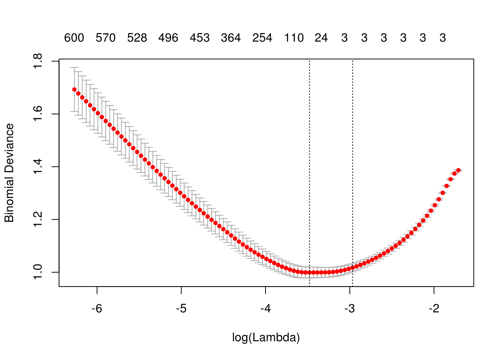
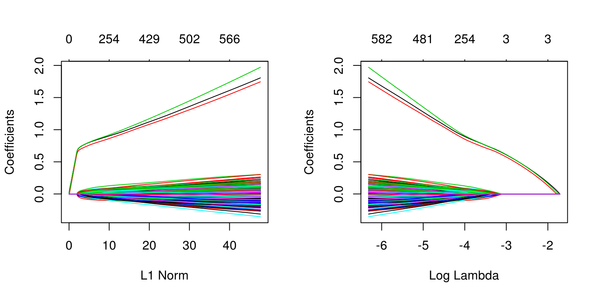

Chapter 24 Regularization
Chapter Status: Currently this chapter is very sparse. It essentially only expands upon an example discussed in ISL, thus only illustrates usage of the methods. Mathematical and conceptual details of the methods will be added later. Also, more comments on using glmnet with caret will be discussed.
We will use the Hitters dataset from the ISLR package to explore two shrinkage methods: ridge regression and lasso. These are otherwise known as penalized regression methods.
data(Hitters, package = "ISLR")This dataset has some missing data in the response Salaray. We use the na.omit() function the clean the dataset.
sum(is.na(Hitters))## [1] 59sum(is.na(Hitters$Salary))## [1] 59Hitters = na.omit(Hitters)
sum(is.na(Hitters))## [1] 0The predictors variables are offensive and defensive statistics for a number of baseball players.
names(Hitters)## [1] "AtBat" "Hits" "HmRun" "Runs" "RBI"
## [6] "Walks" "Years" "CAtBat" "CHits" "CHmRun"
## [11] "CRuns" "CRBI" "CWalks" "League" "Division"
## [16] "PutOuts" "Assists" "Errors" "Salary" "NewLeague"We use the glmnet() and cv.glmnet() functions from the glmnet package to fit penalized regressions.
library(glmnet)Unfortunately, the glmnet function does not allow the use of model formulas, so we setup the data for ease of use with glmnet. Eventually we will use train() from caret which does allow for fitting penalized regression with the formula syntax, but to explore some of the details, we first work with the functions from glmnet directly.
X = model.matrix(Salary ~ ., Hitters)[, -1]
y = Hitters$SalaryFirst, we fit an ordinary linear regression, and note the size of the predictors’ coefficients, and predictors’ coefficients squared. (The two penalties we will use.)
fit = lm(Salary ~ ., Hitters)
coef(fit)## (Intercept) AtBat Hits HmRun Runs
## 163.1035878 -1.9798729 7.5007675 4.3308829 -2.3762100
## RBI Walks Years CAtBat CHits
## -1.0449620 6.2312863 -3.4890543 -0.1713405 0.1339910
## CHmRun CRuns CRBI CWalks LeagueN
## -0.1728611 1.4543049 0.8077088 -0.8115709 62.5994230
## DivisionW PutOuts Assists Errors NewLeagueN
## -116.8492456 0.2818925 0.3710692 -3.3607605 -24.7623251sum(abs(coef(fit)[-1]))## [1] 238.7295sum(coef(fit)[-1] ^ 2)## [1] 18337.324.1 Ridge Regression
We first illustrate ridge regression, which can be fit using glmnet() with alpha = 0 and seeks to minimize
\[ \sum_{i=1}^{n} \left( y_i - \beta_0 - \sum_{j=1}^{p} \beta_j x_{ij} \right) ^ 2 + \lambda \sum_{j=1}^{p} \beta_j^2 . \]
Notice that the intercept is not penalized. Also, note that that ridge regression is not scale invariant like the usual unpenalized regression. Thankfully, glmnet() takes care of this internally. It automatically standardizes predictors for fitting, then reports fitted coefficient using the original scale.
The two plots illustrate how much the coefficients are penalized for different values of \(\lambda\). Notice none of the coefficients are forced to be zero.
par(mfrow = c(1, 2))
fit_ridge = glmnet(X, y, alpha = 0)
plot(fit_ridge)
plot(fit_ridge, xvar = "lambda", label = TRUE)
We use cross-validation to select a good \(\lambda\) value. The cv.glmnet()function uses 10 folds by default. The plot illustrates the MSE for the \(\lambda\)s considered. Two lines are drawn. The first is the \(\lambda\) that gives the smallest MSE. The second is the \(\lambda\) that gives an MSE within one standard error of the smallest.
fit_ridge_cv = cv.glmnet(X, y, alpha = 0)
plot(fit_ridge_cv)
The cv.glmnet() function returns several details of the fit for both \(\lambda\) values in the plot. Notice the penalty terms are smaller than the full linear regression. (As we would expect.)
# fitted coefficients, using 1-SE rule lambda, default behavior
coef(fit_ridge_cv)## 20 x 1 sparse Matrix of class "dgCMatrix"
## 1
## (Intercept) 199.418112992
## AtBat 0.093426871
## Hits 0.389767264
## HmRun 1.212875008
## Runs 0.623229049
## RBI 0.618547530
## Walks 0.810467709
## Years 2.544170913
## CAtBat 0.007897059
## CHits 0.030554662
## CHmRun 0.226545984
## CRuns 0.061265846
## CRBI 0.063384832
## CWalks 0.060720300
## LeagueN 3.743295054
## DivisionW -23.545192371
## PutOuts 0.056202373
## Assists 0.007879196
## Errors -0.164203268
## NewLeagueN 3.313773178# fitted coefficients, using minimum lambda
coef(fit_ridge_cv, s = "lambda.min")## 20 x 1 sparse Matrix of class "dgCMatrix"
## 1
## (Intercept) 7.645824e+01
## AtBat -6.315180e-01
## Hits 2.642160e+00
## HmRun -1.388233e+00
## Runs 1.045729e+00
## RBI 7.315713e-01
## Walks 3.278001e+00
## Years -8.723734e+00
## CAtBat 1.256354e-04
## CHits 1.318975e-01
## CHmRun 6.895578e-01
## CRuns 2.830055e-01
## CRBI 2.514905e-01
## CWalks -2.599851e-01
## LeagueN 5.233720e+01
## DivisionW -1.224170e+02
## PutOuts 2.623667e-01
## Assists 1.629044e-01
## Errors -3.644002e+00
## NewLeagueN -1.702598e+01# penalty term using minimum lambda
sum(coef(fit_ridge_cv, s = "lambda.min")[-1] ^ 2)## [1] 18126.85# fitted coefficients, using 1-SE rule lambda
coef(fit_ridge_cv, s = "lambda.1se")## 20 x 1 sparse Matrix of class "dgCMatrix"
## 1
## (Intercept) 199.418112992
## AtBat 0.093426871
## Hits 0.389767264
## HmRun 1.212875008
## Runs 0.623229049
## RBI 0.618547530
## Walks 0.810467709
## Years 2.544170913
## CAtBat 0.007897059
## CHits 0.030554662
## CHmRun 0.226545984
## CRuns 0.061265846
## CRBI 0.063384832
## CWalks 0.060720300
## LeagueN 3.743295054
## DivisionW -23.545192371
## PutOuts 0.056202373
## Assists 0.007879196
## Errors -0.164203268
## NewLeagueN 3.313773178# penalty term using 1-SE rule lambda
sum(coef(fit_ridge_cv, s = "lambda.1se")[-1] ^ 2)## [1] 588.9958# predict using minimum lambda
predict(fit_ridge_cv, X, s = "lambda.min")# predict using 1-SE rule lambda, default behavior
predict(fit_ridge_cv, X)# calcualte "train error"
mean((y - predict(fit_ridge_cv, X)) ^ 2)## [1] 130404.9# CV-RMSEs
sqrt(fit_ridge_cv$cvm)## [1] 451.4439 449.6588 448.9204 448.6498 448.3540 448.0308 447.6777
## [8] 447.2923 446.8717 446.4130 445.9131 445.3686 444.7759 444.1312
## [15] 443.4307 442.6701 441.8452 440.9515 439.9846 438.9396 437.8119
## [22] 436.5968 435.2898 433.8864 432.3824 430.7740 429.0579 427.2313
## [29] 425.2922 423.2396 421.0733 418.7943 416.4052 413.9097 411.3133
## [36] 408.6230 405.8476 402.9971 400.0836 397.1206 394.1229 391.1064
## [43] 388.0878 385.0843 382.1131 379.1913 376.3351 373.5599 370.8797
## [50] 368.3063 365.8491 363.5168 361.3158 359.2495 357.3196 355.5258
## [57] 353.8661 352.3370 350.9337 349.6504 348.4808 347.4179 346.4546
## [64] 345.5822 344.7987 344.0957 343.4629 342.8961 342.3894 341.9387
## [71] 341.5409 341.1844 340.8655 340.5895 340.3444 340.1237 339.9316
## [78] 339.7567 339.6038 339.4624 339.3358 339.2160 339.1047 338.9974
## [85] 338.8926 338.7881 338.6837 338.5765 338.4659 338.3529 338.2328
## [92] 338.1087 337.9814 337.8478 337.7114 337.5710 337.4276 337.2827
## [99] 337.1386# CV-RMSE using minimum lambda
sqrt(fit_ridge_cv$cvm[fit_ridge_cv$lambda == fit_ridge_cv$lambda.min])## [1] 337.1386# CV-RMSE using 1-SE rule lambda
sqrt(fit_ridge_cv$cvm[fit_ridge_cv$lambda == fit_ridge_cv$lambda.1se]) ## [1] 365.849124.2 Lasso
We now illustrate lasso, which can be fit using glmnet() with alpha = 1 and seeks to minimize
\[ \sum_{i=1}^{n} \left( y_i - \beta_0 - \sum_{j=1}^{p} \beta_j x_{ij} \right) ^ 2 + \lambda \sum_{j=1}^{p} |\beta_j| . \]
Like ridge, lasso is not scale invariant.
The two plots illustrate how much the coefficients are penalized for different values of \(\lambda\). Notice some of the coefficients are forced to be zero.
par(mfrow = c(1, 2))
fit_lasso = glmnet(X, y, alpha = 1)
plot(fit_lasso)
plot(fit_lasso, xvar = "lambda", label = TRUE)
Again, to actually pick a \(\lambda\), we will use cross-validation. The plot is similar to the ridge plot. Notice along the top is the number of features in the model. (Which changed in this plot.)
fit_lasso_cv = cv.glmnet(X, y, alpha = 1)
plot(fit_lasso_cv)
cv.glmnet() returns several details of the fit for both \(\lambda\) values in the plot. Notice the penalty terms are again smaller than the full linear regression. (As we would expect.) Some coefficients are 0.
# fitted coefficients, using 1-SE rule lambda, default behavior
coef(fit_lasso_cv)## 20 x 1 sparse Matrix of class "dgCMatrix"
## 1
## (Intercept) 127.95694754
## AtBat .
## Hits 1.42342566
## HmRun .
## Runs .
## RBI .
## Walks 1.58214111
## Years .
## CAtBat .
## CHits .
## CHmRun .
## CRuns 0.16027975
## CRBI 0.33667715
## CWalks .
## LeagueN .
## DivisionW -8.06171262
## PutOuts 0.08393604
## Assists .
## Errors .
## NewLeagueN .# fitted coefficients, using minimum lambda
coef(fit_lasso_cv, s = "lambda.min")## 20 x 1 sparse Matrix of class "dgCMatrix"
## 1
## (Intercept) 129.4155571
## AtBat -1.6130155
## Hits 5.8058915
## HmRun .
## Runs .
## RBI .
## Walks 4.8469340
## Years -9.9724045
## CAtBat .
## CHits .
## CHmRun 0.5374550
## CRuns 0.6811938
## CRBI 0.3903563
## CWalks -0.5560144
## LeagueN 32.4646094
## DivisionW -119.3480842
## PutOuts 0.2741895
## Assists 0.1855978
## Errors -2.1650837
## NewLeagueN .# penalty term using minimum lambda
sum(coef(fit_lasso_cv, s = "lambda.min")[-1] ^ 2)## [1] 15463.18# fitted coefficients, using 1-SE rule lambda
coef(fit_lasso_cv, s = "lambda.1se")## 20 x 1 sparse Matrix of class "dgCMatrix"
## 1
## (Intercept) 127.95694754
## AtBat .
## Hits 1.42342566
## HmRun .
## Runs .
## RBI .
## Walks 1.58214111
## Years .
## CAtBat .
## CHits .
## CHmRun .
## CRuns 0.16027975
## CRBI 0.33667715
## CWalks .
## LeagueN .
## DivisionW -8.06171262
## PutOuts 0.08393604
## Assists .
## Errors .
## NewLeagueN .# penalty term using 1-SE rule lambda
sum(coef(fit_lasso_cv, s = "lambda.1se")[-1] ^ 2)## [1] 69.66661# predict using minimum lambda
predict(fit_lasso_cv, X, s = "lambda.min")# predict using 1-SE rule lambda, default behavior
predict(fit_lasso_cv, X)# calcualte "train error"
mean((y - predict(fit_lasso_cv, X)) ^ 2)## [1] 118581.5# CV-RMSEs
sqrt(fit_lasso_cv$cvm)## [1] 449.8325 440.8434 430.6634 421.9097 413.7310 405.1814 396.9752
## [8] 389.4865 383.1481 377.6974 372.9633 368.8996 365.3368 362.1960
## [15] 359.1770 356.1060 353.4608 351.2788 349.1602 347.3154 345.7839
## [22] 344.5199 343.5585 342.8751 342.3673 341.9780 341.6826 341.4789
## [29] 341.3799 341.3621 341.3447 341.3661 341.3974 341.3982 341.4863
## [36] 341.7925 342.1263 342.1616 342.0156 341.3673 340.2954 339.1264
## [43] 338.0276 337.1566 336.4158 335.7549 335.2290 334.8145 334.4710
## [50] 334.2264 334.1308 334.2605 334.4416 334.6561 334.7275 334.7687
## [57] 334.8467 334.9261 334.9268 334.9421 334.9447 334.9622 335.0201
## [64] 335.0974 335.1823 335.2836 335.3816 335.4504 335.5046 335.5552
## [71] 335.6159 335.6673 335.7244 335.7969 335.8452# CV-RMSE using minimum lambda
sqrt(fit_lasso_cv$cvm[fit_lasso_cv$lambda == fit_lasso_cv$lambda.min])## [1] 334.1308# CV-RMSE using 1-SE rule lambda
sqrt(fit_lasso_cv$cvm[fit_lasso_cv$lambda == fit_lasso_cv$lambda.1se]) ## [1] 359.17724.3 broom
Sometimes, the output from glmnet() can be overwhelming. The broom package can help with that.
library(broom)
# the output from the commented line would be immense
# fit_lasso_cv
tidy(fit_lasso_cv)## lambda estimate std.error conf.high conf.low nzero
## 1 255.2820965 202349.3 28557.70 230907.0 173791.60 0
## 2 232.6035386 194342.9 28303.20 222646.1 166039.74 1
## 3 211.9396813 185470.9 27292.26 212763.2 158178.67 2
## 4 193.1115442 178007.8 26448.02 204455.8 151559.79 2
## 5 175.9560468 171173.3 25832.82 197006.2 145340.51 3
## 6 160.3245966 164171.9 25200.06 189372.0 138971.89 4
## 7 146.0818013 157589.3 24445.93 182035.3 133143.41 4
## 8 133.1042967 151699.8 23741.08 175440.8 127958.68 4
## 9 121.2796778 146802.5 23142.05 169944.5 123660.44 4
## 10 110.5055255 142655.3 22567.90 165223.2 120087.45 4
## 11 100.6885192 139101.6 22046.46 161148.1 117055.17 5
## 12 91.7436287 136086.9 21643.10 157730.0 114443.81 5
## 13 83.5933775 133471.0 21371.00 154842.0 112099.98 5
## 14 76.1671723 131186.0 21217.79 152403.8 109968.18 5
## 15 69.4006906 129008.1 21137.98 150146.1 107870.12 6
## 16 63.2353245 126811.5 21004.64 147816.1 105806.84 6
## 17 57.6176726 124934.6 20880.15 145814.7 104054.41 6
## 18 52.4990774 123396.8 20790.86 144187.7 102605.96 6
## 19 47.8352040 121912.8 20669.70 142582.5 101243.15 6
## 20 43.5856563 120628.0 20562.67 141190.7 100065.35 6
## 21 39.7136268 119566.5 20482.74 140049.3 99083.77 6
## 22 36.1855776 118694.0 20423.68 139117.6 98270.28 6
## 23 32.9709506 118032.5 20388.76 138421.2 97643.69 6
## 24 30.0419022 117563.4 20375.13 137938.5 97188.23 6
## 25 27.3730624 117215.4 20371.98 137587.4 96843.40 6
## 26 24.9413150 116948.9 20374.13 137323.1 96574.81 6
## 27 22.7255973 116747.0 20382.35 137129.4 96364.67 6
## 28 20.7067179 116607.8 20393.33 137001.2 96214.50 6
## 29 18.8671902 116540.3 20406.51 136946.8 96133.75 6
## 30 17.1910810 116528.1 20414.57 136942.7 96113.55 7
## 31 15.6638727 116516.2 20427.64 136943.8 96088.56 7
## 32 14.2723374 116530.8 20435.08 136965.9 96095.76 7
## 33 13.0044223 116552.2 20441.75 136994.0 96110.45 9
## 34 11.8491453 116552.7 20453.42 137006.1 96099.31 9
## 35 10.7964999 116612.9 20475.86 137088.8 96137.04 9
## 36 9.8373686 116822.1 20490.41 137312.5 96331.73 9
## 37 8.9634439 117050.4 20496.11 137546.5 96554.33 9
## 38 8.1671562 117074.6 20442.88 137517.4 96631.67 11
## 39 7.4416086 116974.7 20354.65 137329.3 96620.03 11
## 40 6.7805166 116531.6 20209.87 136741.5 96321.78 12
## 41 6.1781542 115801.0 19981.26 135782.2 95819.73 12
## 42 5.6293040 115006.7 19714.91 134721.6 95291.80 13
## 43 5.1292121 114262.7 19468.78 133731.5 94793.90 13
## 44 4.6735471 113674.6 19252.60 132927.2 94421.96 13
## 45 4.2583620 113175.6 19059.65 132235.2 94115.94 13
## 46 3.8800609 112731.3 18887.46 131618.8 93843.89 13
## 47 3.5353670 112378.5 18734.92 131113.4 93643.53 13
## 48 3.2212947 112100.8 18595.48 130696.2 93505.27 13
## 49 2.9351238 111870.9 18451.77 130322.6 93419.08 13
## 50 2.6743755 111707.3 18320.58 130027.9 93386.69 13
## 51 2.4367913 111643.4 18204.70 129848.1 93438.70 13
## 52 2.2203135 111730.1 18119.79 129849.9 93610.29 14
## 53 2.0230670 111851.2 18047.80 129899.0 93803.38 15
## 54 1.8433433 111994.7 17979.26 129974.0 94015.46 15
## 55 1.6795857 112042.5 17922.38 129964.9 94120.08 17
## 56 1.5303760 112070.1 17884.06 129954.2 94186.06 17
## 57 1.3944216 112122.3 17853.61 129975.9 94268.73 17
## 58 1.2705450 112175.5 17822.71 129998.2 94352.77 17
## 59 1.1576733 112175.9 17808.06 129984.0 94367.87 17
## 60 1.0548288 112186.2 17782.44 129968.7 94403.80 17
## 61 0.9611207 112187.9 17740.66 129928.6 94447.28 17
## 62 0.8757374 112199.7 17698.14 129897.8 94501.52 17
## 63 0.7979393 112238.5 17663.70 129902.2 94574.76 17
## 64 0.7270526 112290.3 17632.65 129922.9 94657.62 17
## 65 0.6624632 112347.2 17602.81 129950.0 94744.35 18
## 66 0.6036118 112415.1 17578.68 129993.8 94836.41 18
## 67 0.5499886 112480.8 17549.77 130030.6 94931.06 18
## 68 0.5011291 112527.0 17538.22 130065.2 94988.75 17
## 69 0.4566102 112563.3 17507.66 130071.0 95055.69 18
## 70 0.4160462 112597.3 17497.55 130094.9 95099.75 18
## 71 0.3790858 112638.0 17474.32 130112.3 95163.67 18
## 72 0.3454089 112672.5 17460.17 130132.7 95212.36 18
## 73 0.3147237 112710.9 17444.88 130155.8 95266.03 18
## 74 0.2867645 112759.5 17433.62 130193.2 95325.91 18
## 75 0.2612891 112792.0 17426.30 130218.3 95365.72 18# the two lambda values of interest
glance(fit_lasso_cv) ## lambda.min lambda.1se
## 1 2.436791 69.4006924.4 Simulated Data, \(p > n\)
Aside from simply shrinking coefficients (ridge) and setting some coefficients to 0 (lasso), penalized regression also has the advantage of being able to handle the \(p > n\) case.
set.seed(1234)
n = 1000
p = 5500
X = replicate(p, rnorm(n = n))
beta = c(1, 1, 1, rep(0, 5497))
z = X %*% beta
prob = exp(z) / (1 + exp(z))
y = as.factor(rbinom(length(z), size = 1, prob = prob))We first simulate a classification example where \(p > n\).
# glm(y ~ X, family = "binomial")
# will not convergeWe then use a lasso penalty to fit penalized logistic regression. This minimizes
\[ \sum_{i=1}^{n} L\left(y_i, \beta_0 + \sum_{j=1}^{p} \beta_j x_{ij}\right) + \lambda \sum_{j=1}^{p} |\beta_j| \]
where \(L\) is the appropriate negative log-likelihood.
library(glmnet)
fit_cv = cv.glmnet(X, y, family = "binomial", alpha = 1)
plot(fit_cv)
head(coef(fit_cv), n = 10)## 10 x 1 sparse Matrix of class "dgCMatrix"
## 1
## (Intercept) 0.02397452
## V1 0.59674958
## V2 0.56251761
## V3 0.60065105
## V4 .
## V5 .
## V6 .
## V7 .
## V8 .
## V9 .fit_cv$nzero## s0 s1 s2 s3 s4 s5 s6 s7 s8 s9 s10 s11 s12 s13 s14 s15 s16 s17
## 0 2 3 3 3 3 3 3 3 3 3 3 3 3 3 3 3 3
## s18 s19 s20 s21 s22 s23 s24 s25 s26 s27 s28 s29 s30 s31 s32 s33 s34 s35
## 3 3 3 3 3 3 3 3 3 3 3 3 4 6 7 10 18 24
## s36 s37 s38 s39 s40 s41 s42 s43 s44 s45 s46 s47 s48 s49 s50 s51 s52 s53
## 35 54 65 75 86 100 110 129 147 168 187 202 221 241 254 269 283 298
## s54 s55 s56 s57 s58 s59 s60 s61 s62 s63 s64 s65 s66 s67 s68 s69 s70 s71
## 310 324 333 350 364 375 387 400 411 429 435 445 453 455 462 466 475 481
## s72 s73 s74 s75 s76 s77 s78 s79 s80 s81 s82 s83 s84 s85 s86 s87 s88 s89
## 487 491 496 498 502 504 512 518 523 526 528 536 543 550 559 561 563 566
## s90 s91 s92 s93 s94 s95 s96 s97 s98
## 570 571 576 582 586 590 596 596 600Notice, only the first three predictors generated are truly significant, and that is exactly what the suggested model finds.
fit_1se = glmnet(X, y, family = "binomial", lambda = fit_cv$lambda.1se)
which(as.vector(as.matrix(fit_1se$beta)) != 0)## [1] 1 2 3We can also see in the following plots, the three features entering the model well ahead of the irrelevant features.
par(mfrow = c(1, 2))
plot(glmnet(X, y, family = "binomial"))
plot(glmnet(X, y, family = "binomial"), xvar = "lambda")
We can extract the two relevant \(\lambda\) values.
fit_cv$lambda.min## [1] 0.03087158fit_cv$lambda.1se## [1] 0.0514969Since cv.glmnet() does not calculate prediction accuracy for classification, we take the \(\lambda\) values and create a grid for caret to search in order to obtain prediction accuracy with train(). We set \(\alpha = 1\) in this grid, as glmnet can actually tune over the \(\alpha = 1\) parameter. (More on that later.)
Note that we have to force y to be a factor, so that train() recognizes we want to have a binomial response. The train() function in caret use the type of variable in y to determine if you want to use family = "binomial" or family = "gaussian".
library(caret)
cv_5 = trainControl(method = "cv", number = 5)
lasso_grid = expand.grid(alpha = 1,
lambda = c(fit_cv$lambda.min, fit_cv$lambda.1se))
lasso_grid## alpha lambda
## 1 1 0.03087158
## 2 1 0.05149690sim_data = data.frame(y, X)
fit_lasso = train(
y ~ ., data = sim_data,
method = "glmnet",
trControl = cv_5,
tuneGrid = lasso_grid
)
fit_lasso$results## alpha lambda Accuracy Kappa AccuracySD KappaSD
## 1 1 0.03087158 0.7679304 0.5358028 0.03430230 0.06844656
## 2 1 0.05149690 0.7689003 0.5377583 0.02806941 0.05596114The interaction between the glmnet and caret packages is sometimes frustrating, but for obtaining results for particular values of \(\lambda\), we see it can be easily used. More on this next chapter.
24.5 External Links
glmnetWeb Vingette - Details from the package developers.
24.6 rmarkdown
The rmarkdown file for this chapter can be found here. The file was created using R version 3.4.2. The following packages (and their dependencies) were loaded when knitting this file:
## [1] "caret" "ggplot2" "lattice" "broom" "glmnet" "foreach" "Matrix"